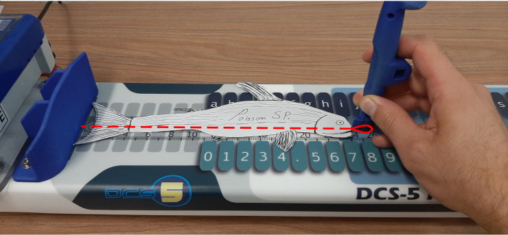

This python (python 3.10) application provides a graphical interface to interact (GUI) with a BigFin Dcs5 XT or MICRO measuring board via Bluetooth. The application turns stylus inputs on the measuring board into keyboard entry, essentially turning the dcs5 measuring board into a wireless keyboard. A Marel Marine Scale can also be connected to the application. See the project marel_marine_scale_controller for more information and how to set up the scale.
Downloading the Dcs5 Controller App from the latest release.
dcs5.zip from the last version here.dcs5.zipdcs5.exeThe stylus needs to be placed within the detection zone. The detection delay can be adjusted in the configuration (See section Configuration files). The control box lights will flash when a measurement is made.
The measurement board has 3 different output modes; length, top and bottom. The top and bottom mode are used to access the top and bottom keys by placing the stylus on the corresponding circle within the detection zone of the board. There are 2 ways to change the detection zone; by mapping commands to the control box keys or by defining swiping regions on the board.
The map command to change to a specific output mode or to cycle through the output modes. * See section Configuration files for the output mode commands.
Furthermore, the default LED display of the control box changes depending on the output modes. * See section LEDs Displays.
xt control
box.

The corresponding output modes are:
The map definition in the configuration file is:
{"output_modes": {
"segments_limits": [0, 230, 430, 630, 800],
"segments_mode": ["length", "top", "bottom", "length"]
}}
The only difference between the xt and
micro control box models are the number of keys and the LED
display and flash sequence.
xt
miroDifferent LEDs patterns are displayed on the control box to give feedback to the users.


Then, once the stylus is placed down, the leds will slowly light up in the following sequences. When the point is successfully calibrated is over, all the leds will rapidly flash.

The application requires a configuration to work. To load and manage configuration, click on Dcs5 > Configuration in the top bar.


xt and
micro models. Select the Control Box model (xt or micro)
and enter a name for the new configuration.

The bluetooth address of the controller (mac address) will need to be
changed once a new configuration is created. Select the configuration
and the Controller Configuration file and press
Edit. In the json file, change the following value:
client -> mac_addressSee section Configuration files for more information on the different configuration parameters.
To connect to the Dcs5 measuring board, the Board Mac (bluetooth) address needs to be specified in the Controller Configuration file. You can edit the file via the configuration menu (see sections Configurations and Controller Configuration)
Then you need to connect and then activate the board by pressing the Connect and Activate button.

The red circle next to the Connect button will turn into a yellow triangle while the application is attempting to connect to the board and then into a green when connected.

The red circles next to the Activate button will also turn green when the application and board are ready to use. When activating the board, the application will synchronize with the board control box. (See the section Additional GUI features). The application will try to synchronize with the board control box on activation. The application and the board are synchronized when the application receives confirmations that the board internal parameters (mainly those related to stylus detection) are the same as those specified in the configuration files. If the synchronization failed, indicated by a red circle next to the Synchronize button, you can press the Synchronize button to try again. If it still doesn’t work, try to restart the board and the application.
The board needs to be calibrated using two calibration points.
Although the calibration is linear, keep in mind that the stylus has
some non-uniform thickness which will offset, to some extent, the
measured values if the stylus’s orientation differs when measuring
versus when calibrating. We recommend using the tiniest part of the
stylus to make the calibration and then add offset in the
calibration files for each stylus.
To calibrate the board, click on Set Cal. Pts.


Press the Calibrate button to enter the calibration mode, from there follow the instruction given by the application. Note that a right to left swipe will exit the calibration mode. For each calibration point, the calibration progress will be shown by the following LEDs display once the stylus is placed down. If the stylus is lifted or moved too much before the calibration is done, the calibration restart.


Configurations are created and modified via the application GUI (See section configuration). A configuration is made of two json files that are used to change the controller and measuring board behavior. - controller_configuration - device_specification
Default xt file: xt_controller_configuration.json
Default micro file: micro_controller_configuration.json
Usage:
client: Measuring board bluetooth information.
{"client": {
"device_name": "BigFinDCS5-E5FE",
"mac_address": "00:06:66:89:E5:FE",
"marel_ip_address": "192.168.0.202"
}}launch_settings: setting used when the app is launched.
{"launch_settings": {
"output_mode": "length",
"reading_profile": "measure",
"dynamic_stylus_mode": true,
"backlighting_level": 95,
"length_units": "mm",
"stylus": "pen",
"auto_enter": true
}}reading_profiles:
{"reading_profiles": {
"measure": {
"settling_delay": 9,
"number_of_reading": 50,
"max_deviation": 50
}}}output_modes:
{"output_modes": {
"swipe_threshold": 5,
"segments_limits": [0, 230, 430, 630, 800],
"segments_mode": ["length", "top", "bottom", "length"],
"mode_reading_profiles": {
"top": "key",
"length": "measure",
"bottom": "key"
}
}}keys_maps (See Key Mapping section):
Fields: control_box, control_box_mode,
board, board_mode
The names of the keys are set in devices_specification.json.
Commands:
"BACKLIGHT_UP", "BACKLIGHT_DOWN": Change the control
box backlight level."CHANGE_STYLUS": Cycle through the list of stylus
defined in the devices_specifications file."UNITS_mm", "UNITS_cm": Change output units."MODE_TOP", "MODE_LENGTH", "MODE_BOTTOM": Change the
output mode."CHANGE_OUTPUT_MODE": Cycle through output mode (TOP,
LENGTH, BOTTOM)."MODE": Access the alternative (mode) mapping
(control_box_mode, board_mode)."WEIGHT": Prints the weight measured by the Marel Scale
(if connected)."DELETE_LAST: Delete the last printed value."PRINT <string to print>"]: Prints the
<string to print> value.Valid keyboard input (Source: PyAutoGui):
['\t', '\n', '\r', ' ', '!', '"', '#', '$', '%', '&', "'",
'(', ')', '*', '+', ',', '-', '.', '/', '{', '|', '}', '~',
':', ';', '<', '=', '>', '?', '@', '[', '\\', ']', '^', '_', '`',
'0', '1', '2', '3', '4', '5', '6', '7', '8', '9',
'a', 'b', 'c', 'd', 'e', 'f', 'g', 'h', 'i', 'j', 'k', 'l', 'm', 'n', 'o',
'p', 'q', 'r', 's', 't', 'u', 'v', 'w', 'x', 'y', 'z',
'A', 'B', 'C', 'D', 'E', 'F', 'G', 'H', 'I', 'J', 'K', 'L', 'M', 'N', 'O',
'P', 'Q', 'R', 'S', 'T', 'U', 'V', 'W', 'X', 'Y', 'Z'
'accept', 'add', 'alt', 'altleft', 'altright', 'apps', 'backspace',
'browserback', 'browserfavorites', 'browserforward', 'browserhome',
'browserrefresh', 'browsersearch', 'browserstop', 'capslock', 'clear',
'convert', 'ctrl', 'ctrlleft', 'ctrlright', 'decimal', 'del', 'delete',
'divide', 'down', 'end', 'enter', 'esc', 'escape', 'execute', 'f1', 'f10',
'f11', 'f12', 'f13', 'f14', 'f15', 'f16', 'f17', 'f18', 'f19', 'f2', 'f20',
'f21', 'f22', 'f23', 'f24', 'f3', 'f4', 'f5', 'f6', 'f7', 'f8', 'f9',
'final', 'fn', 'hanguel', 'hangul', 'hanja', 'help', 'home', 'insert', 'junja',
'kana', 'kanji', 'launchapp1', 'launchapp2', 'launchmail',
'launchmediaselect', 'left', 'modechange', 'multiply', 'nexttrack',
'nonconvert', 'num0', 'num1', 'num2', 'num3', 'num4', 'num5', 'num6',
'num7', 'num8', 'num9', 'numlock', 'pagedown', 'pageup', 'pause', 'pgdn',
'pgup', 'playpause', 'prevtrack', 'print', 'printscreen', 'prntscrn',
'prtsc', 'prtscr', 'return', 'right', 'scrolllock', 'select', 'separator',
'shift', 'shiftleft', 'shiftright', 'sleep', 'space', 'stop', 'subtract', 'tab',
'up', 'volumedown', 'volumemute', 'volumeup', 'win', 'winleft', 'winright', 'yen',
'command', 'option', 'optionleft', 'optionright']Default file: devices_specification.json
Usage:
board:
{"board": {
"number_of_keys": 49,
"key_to_mm_ratio": 15.385,
"zero": -3.695,
"detection_range": 2}
}Notes: The two lists (top and bottom) should not contain identical names.
control_box:
stylus_offset: Offset in mm that is added to the value measured by the board.